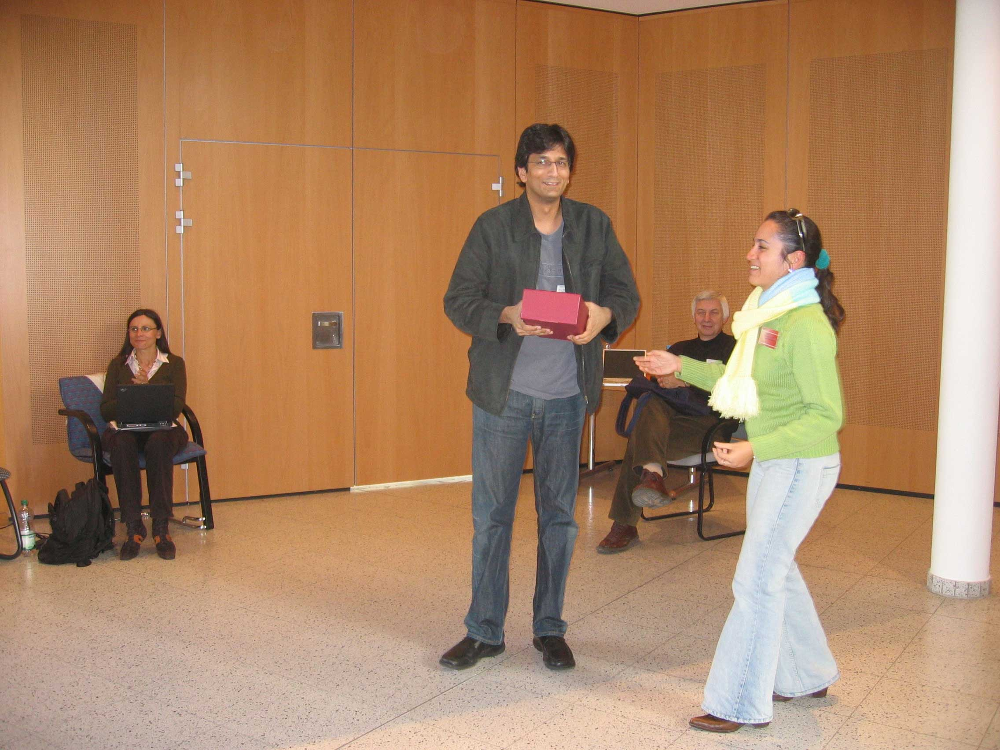
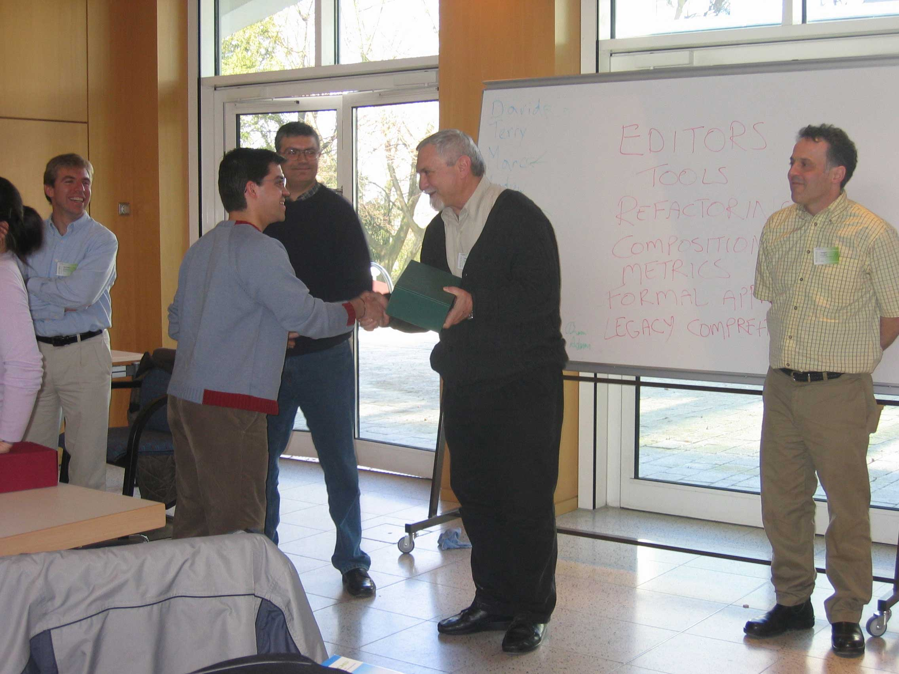
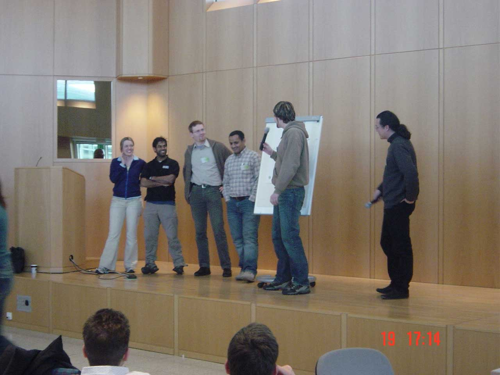
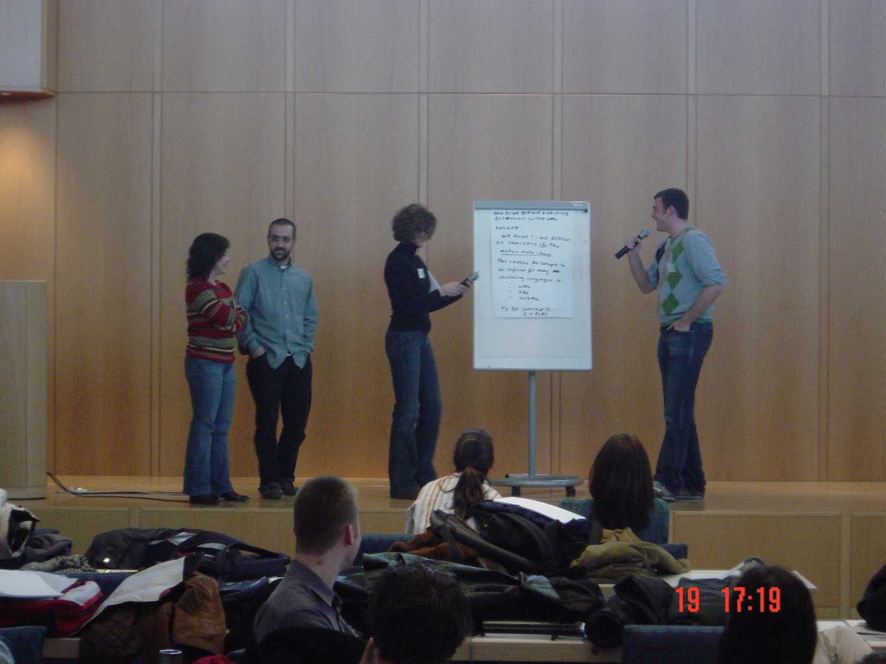
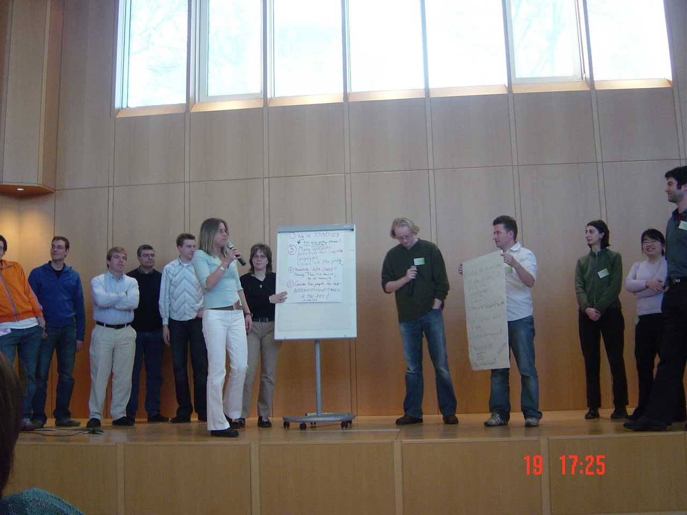
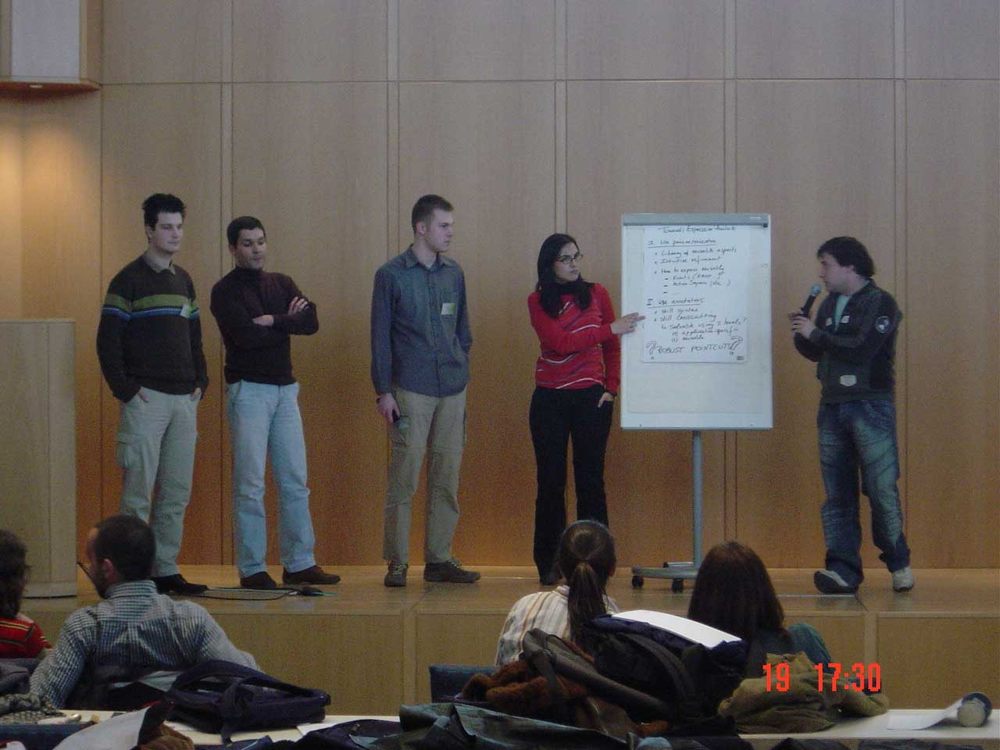
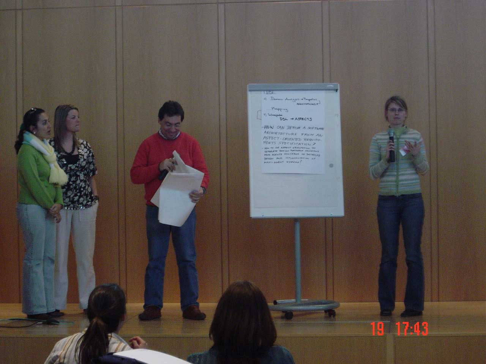
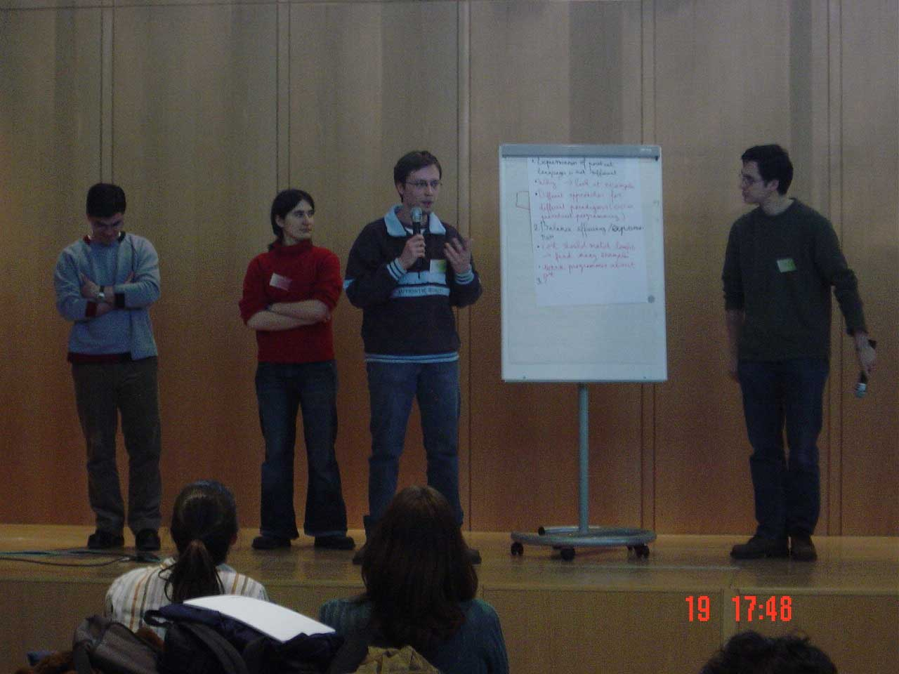
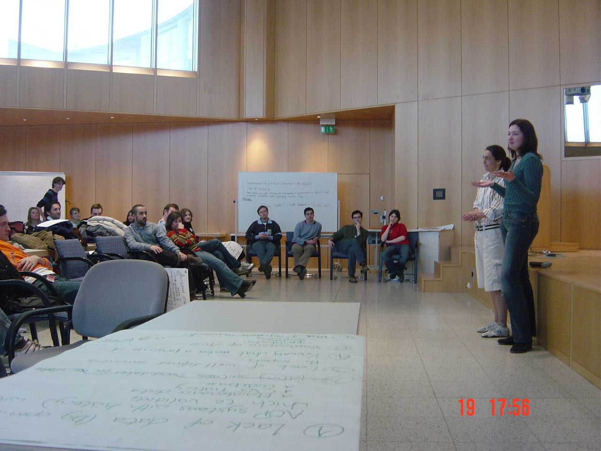

|


Spring SchoolStarts 9:30 on SundayCoffee and lunch will be served. Note that there is a time change early Sunday morning and clocks move ahead one hour. The AOSD.07 Spring School, to be held on Sunday, March 11, will follow in the footsteps of last year's highly successful edition. It attracted more than 40 students, who were given the opportunity to interact with each other and nearly a dozen invited experts on AOSD such as Theo D'Hondt, Eric Eide, Bob Filman, Shmuel Katz, Gregor Kiczales, Mira Mezini, Awais Rashid, and Eddie Truyen. We are assembling an equally impressive group of experts for this year's edition. Some of these experts will give short presentations on the state of the art in AOSD, while others will sit on an informal panel, giving students the opportunity to ask questions and voice concerns. Issues that were raised last year include:
The major part of the day will consist of interactive group sessions. These allow students to get in touch with others that share similar interests. The ulterior motive is to build a network of AOSD students that transcends the AOSD conference series. The Spring School event will be held at UBC Robson Square (the University of British Columbia's downtown campus). It is walking distance from the conference hotel. The Spring School is sponsored by AOSD-Europe, the European Network of Excellence on AOSD.
We still accept submissions! Contact Yvonne Coady and Maja D'Hondt, at
Memories of spring school '06:          Edited by the AOSD Conference Committee. Send comments to: webmaster  aosd.net aosd.net |